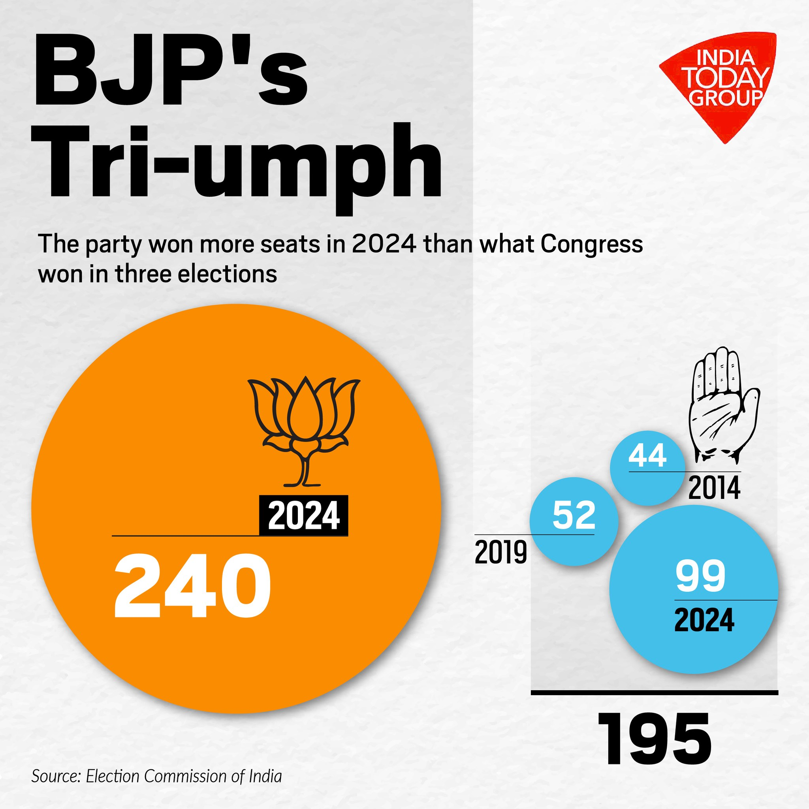
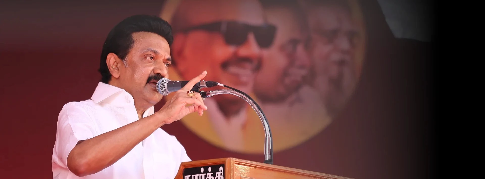
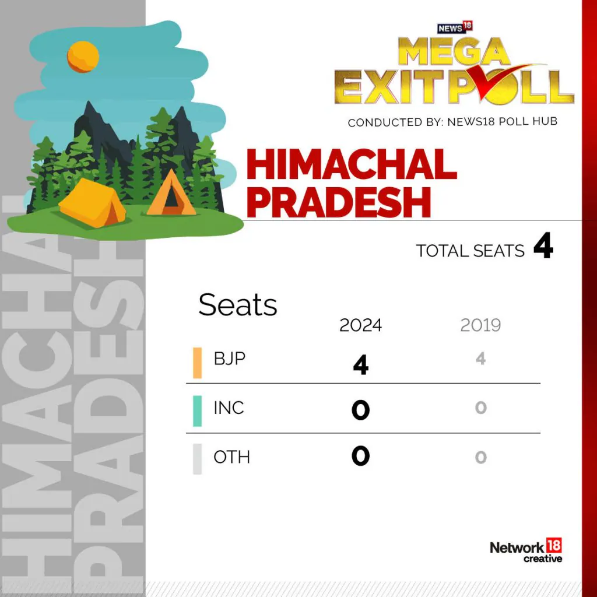
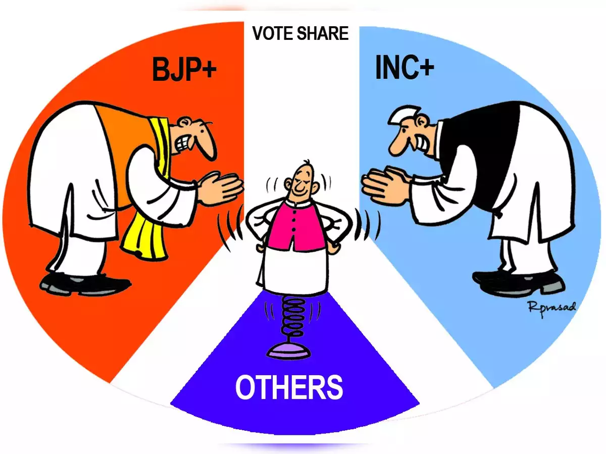

1. BJP's Dominance
The Bharatiya Janata Party (BJP) emerged as the largest party, securing 240 seats out of 543.
2. Congress's Performance
The Indian National Congress (INC) won 99 seats, consolidating its position as the second-largest party in the Lok Sabha.

3. Regional Party Influence
Regional parties like the Samajwadi Party (37 seats) and the All India Trinamool Congress (29 seats) demonstrated strong performances in their respective states.
| Party | Seats Won |
|---|---|
| Samajwadi Party | 37 |
| All India Trinamool Congress | 29 |

4. DMK's Significant Gains
Dravida Munnetra Kazhagam (DMK) won 22 seats, indicating substantial support in Tamil Nadu.
5. BJP's Sweep in Gujarat Bye-Elections
BJP won several By-elections in Gujarat, including Porbandar, Manavadar, Khambhat, and Vaghodia.
| Constituency | Winning Party |
|---|---|
| Porbandar | BJP |
| Manavadar | BJP |
| Khambhat | BJP |
| Vaghodia | BJP |

6. Mixed Results in Himachal Pradesh By-Elections
BJP and INC both had notable wins in Himachal Pradesh, with BJP winning Dharamshala and Barsar, while INC secured Lahaul & Spiti, Sujanpur, Gagret, and Kutlehar.
7. Varied Outcomes Across States
The assembly elections showed varied outcomes across different states like Arunachal Pradesh, where BJP led with 46 seats, and Andhra Pradesh, where Telugu Desam Party (TDP) won 135 seats.
| State | Leading Party | Seats Won |
|---|---|---|
| Arunachal Pradesh | BJP | 46 |
| Andhra Pradesh | TDP | 135 |
8. Independent Candidates
Independent candidates won a total of 7 seats in the Lok Sabha elections, reflecting a diverse voter preference in certain constituencies.

9. Minor Parties' Presence
Smaller parties like the Communist Party of India (Marxist-Leninist) (Liberation) and the Bharat Adivasi Party also secured a few seats, indicating localized support.
10. Congress's Regional Wins
The Indian National Congress made significant gains in various bye-elections, winning seats in Jharkhand, Karnataka, Tamil Nadu, and Telangana.
| State | Winning Party | Seats Won |
|---|---|---|
| Jharkhand | INC | 5 |
| Karnataka | INC | 10 |
| Tamil Nadu | INC | 7 |
| Telangana | INC | 4 |